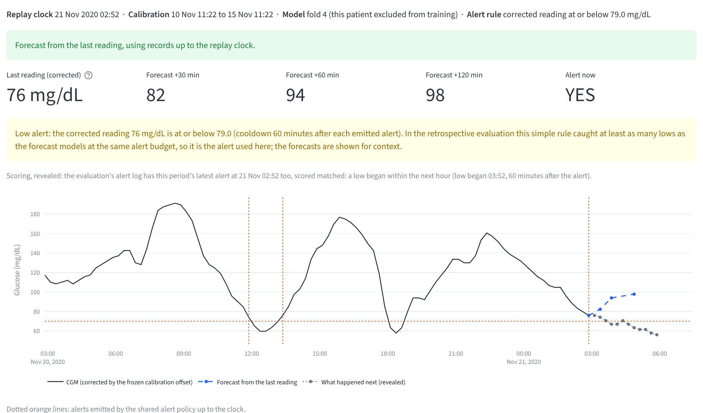
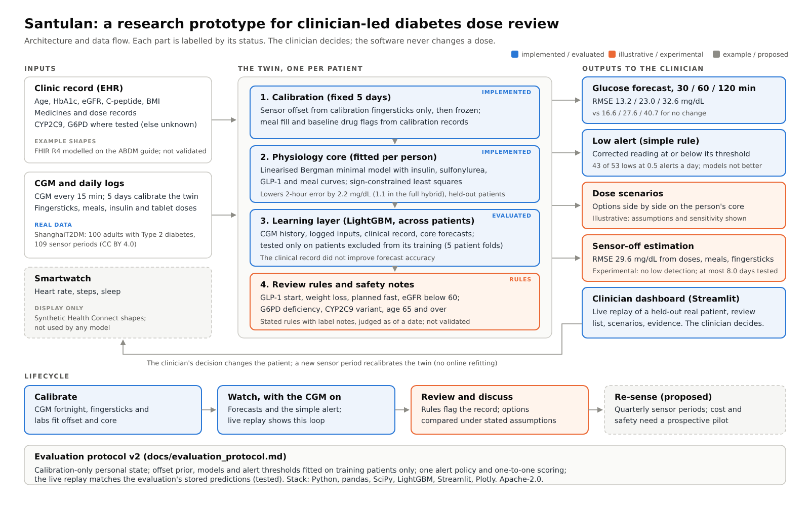
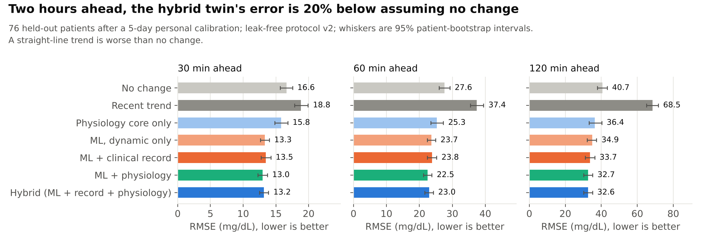
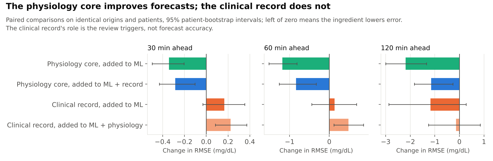
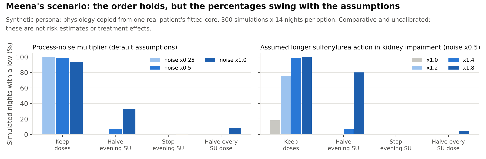

Happiest Health Digital Twin Challenge 2026 · Phase 1
Santulan
A research prototype for clinician-led diabetes dose review: a digital twin that brings a patient's body changes and CGM history together, with forecasts evaluated on real held-out patients and dose scenarios whose assumptions are stated
Code, data and results on GitHub: Heartificial-Intelligence_IIM-Mumbai
The problem
Millions of Indians take the two diabetes drug classes that can push sugar dangerously low
Sulfonylureas and insulin are India's workhorse drugs. When the body changes, the same dose can become too strong
10.1 cr
Indian adults with diabetes
ICMR-INDIAB 2023
2.5 cr
take a sulfonylurea or insulin: about half are treated, half of those on these drugs
LANDMARC, 6,234 patients
25 lakh
severe lows a year: our estimate of the problem's size (range 13 to 48 lakh), not a prototype result
Meta-analysis of 5.3 lakh people: 5% a year on SU, 21% on insulin
48 of 164
drug-reaction admissions at KEM Hospital, Mumbai, were sulfonylurea reactions
JCDR 2022
Lows are often silent
In older adults wearing a sensor, 80 to 100% of lows went unnoticed. HbA1c can read "well controlled" while nights go low.
Systematic review, UEA
Lows harm
Severe lows are linked to dementia, and in the LEADER trial to a higher risk of death.
JAMA 2009; LEADER
Lows are common
8.9% of insulin-treated Type 2 patients had a severe low in just four weeks; South-East Asia, including India, was among the highest.
Global HAT study, 2016
Santulan · ProblemSources in the README
What Santulan is
A working twin for the dose review, with every part labelled by how far it is proven
A physiology core fitted to each person, population models evaluated on held-out patients, stated review rules and illustrative scenarios
Calibrate IMPLEMENTED
A fixed 5-day CGM window fits the person's physiology core and freezes their sensor offset from calibration fingersticks.
Forecast EVALUATED
30, 60 and 120-minute glucose forecasts on real held-out patients, against honest baselines.
Low alert EVALUATED
A simple rule on the corrected reading, because no model beat it at the same alert budget.
Review rules RULES
GLP-1 start, weight loss, planned fast, eGFR below 60; G6PD, CYP2C9 and age notes, each with its label note.
Dose scenarios ILLUSTRATIVE
Step-down options compared on the person's core, with assumptions on sliders and their sensitivity shown.
Sensor-off EXPERIMENTAL
Glucose estimation from doses, meals and fingersticks; tracks the level, cannot detect lows.
Live replay steps a real held-out patient through time with the same code as the evaluation. Smartwatch data are display only; FHIR records are example shapes; quarterly sensing is proposed. The doctor decides; the software never changes a dose.
Santulan · What it isREADME: status table
The twin in action
Live replay: a real held-out patient, stepped through time with the evaluation's own code
Only records up to the replay clock are used; the forecast model was trained without this patient

02:52, an hour before a night low
76 mg/dL is at or below the fold's 79 threshold, so the simple rule alerts; the forecasts expected a rise. The low began at 03:52. An earlier low was missed.
What updates when
Each step adds new CGM readings, doses and meals
Offset and core are fitted once on calibration, not refitted online
Checks you can see
Forecasts equal the evaluation's stored predictions
Stale or missing CGM shows "unavailable", not a guess
A synthetic GLP-1 start changes the review rule, not the physiology
Santulan · Live replaytwin/replay.py; tests/test_replay.py
Why now
In 2026 the body changes faster than the prescription
Four common changes can make a previously right sulfonylurea or insulin dose too strong, and doses rarely come down
GLP-1 start
17 to 24%
have lows on semaglutide plus a sulfonylurea, against 2 to 4% alone; the label advises considering a lower dose. Generic semaglutide reached India in March 2026.
Drug label rates; South First
Weight loss
5%+
raises insulin sensitivity, so the same tablet can lower sugar further. Wellness success is exactly when doses may need review.
Project Khushi pilot: 59% lost weight
Fasting
Fast days
Meals move or vanish on fasting days; doses often do not.
JSHD 2015; IJEM 2017
Kidney function
eGFR < 60
The glimepiride label advises a 1 mg start and conservative titration; its metabolites accumulate as kidney function falls.
US glimepiride label
9.4 to 16.9%
Among 89,987 US adults aged 65 and over, 48% were already below their sugar goal, yet only 9.4% (2019) to 16.9% (2023) had treatment reduced. Clinicians need structured support to decide when a dose should come down.
Santulan · Why nowJAMA Internal Medicine, via Drug Topics; US glimepiride label
The gap
Low prediction already exists; structured support for the dose decision does not
Santulan aims at the medication review: which body changes happened, what the CGM shows, and how step-down options compare
Prediction is already a product
Roche's SmartGuide app predicts lows 30 minutes ahead, glucose 2 hours ahead and overnight risk on a sensor worn continuously. On sale in the Gulf; we found no India launch.
Roche UK; BioSpectrum Asia
Whole-body twin programmes exist
Twin Health runs a paid remission programme first trialled in India. It is not a clinician's dose-review tool for sulfonylurea and insulin users.
ADA 2022 report; NEJM Catalyst via pharmaphorum
Where Santulan fits
Not another low predictor: support for the review a physician does when a body change makes a dose questionable, with the evidence behind each part stated.
What 28 public challenge entries do (keyword scan, 14 Oct)
Type 2 glucose twins
12
What-if simulators
18
Watch for GLP-1, weight-loss or fasting changes
0
Test the twin with the sensor off
0
Use CYP2C9 or G6PD for sulfonylureas
0
Mention sensor artefacts at all
1
Indicative counts from a keyword scan of entries public on one day. Santulan's own results on these points are shown in this deck, including where they are negative.
Santulan · The gapAggregate counts only
Architecture

Santulan · Architecturedocs/architecture.pdf
How we evaluate
An audit found our first evaluation let later data in; version 2 is leak-free
76 real patients, 85 sensor periods, 538 monitored days (ShanghaiT2DM, open data). Protocol frozen before running; tests enforce it
What version 1 got wrong
Sensor offset used fingersticks from later days
The offset prior included the patients being tested
Missing meals and the calibration length looked at the whole period
Sensor-off mode started from a hidden CGM reading
Alarm hits and false alarms were scored by different rules
Its results are kept, labelled superseded, and not quoted.
What version 2 does
Fixed 5-day calibration per person; offset, meals and core from those days only
Population models, offset prior and alert thresholds fitted on training patients only (5 patient folds)
One alert policy; one-to-one matching; false alerts only with observed follow-up
Honest baselines: no change, recent trend, physiology only, ML without physiology
Tests check that later data cannot change an earlier output
5 days
fixed calibration per person, after a 24-hour warm-up
5 folds
of patients; population models never saw the patient, who is personalised only by their own 5 days
53 lows
CGM-defined episodes in 20 held-out patients
Retrospective
same patients as version 1: development evidence, not independent validation
paired sensor readings below 70 (fingerstick within 8 minutes) were confirmed below 70
What the twin does
Drops each sensor's first 24 hours
Learns the offset from calibration fingersticks only, then freezes it
Counts a low only after 15 minutes below 70
Descriptive and whole-period. Sparse fingersticks do not establish true lows. A US hospital study found a 12.8 mg/dL bias for this sensor family (Diabetes Care 2020).
Santulan · Sensor checkresults/data_check.json
Real data, forecasts
Two hours ahead, the hybrid twin's error is 20% below assuming no change
Held-out patients after a 5-day personal calibration; every method scored on the same origins

32.6
mg/dL hybrid error at 2 hours (95% CI 30.2 to 35.1)
40.7
mg/dL for "no change"; 36.4 for the physiology core alone
13.2 / 23.0
mg/dL hybrid error at 30 and 60 minutes
68.5
mg/dL for a straight-line trend: worse than no change
Santulan · Forecastsresults/evaluation.json
What each ingredient adds
The physiology core improves forecasts; the clinical record does not
Paired comparisons on identical patients and origins, with patient-level bootstrap intervals

Physiology core: adding it lowers 2-hour error by 2.2 mg/dL to machine learning without the record, and by 1.1 mg/dL in the full hybrid; both intervals exclude zero. This is the twin's measured contribution.
Clinical record: once the twin is calibrated, it makes forecasts slightly worse at 30 and 60 minutes and no different at 2 hours. Its job is the review rules: medicines, eGFR, weight, genetics and fasting plans decide who is flagged.
Meena's scenario ranks the options, but its percentages swing with the assumptions
Meena, 62 (synthetic): glimepiride-metformin twice daily, semaglutide for 6 weeks, 5% weight lost, eGFR 72 to 58; physiology copied from one real patient

Default assumptions: keep doses 99% of simulated nights with a low; halve the evening dose 7.5%; stop it 0%.
But: halving the evening dose ranges from 0% to 33% across noise settings and reaches 80% under a stronger kidney assumption; without it, unchanged doses give 18%.
Regimen: twice-daily glimepiride-metformin combinations are common in India (7,058 patients, 347 sites); the US label specifies once daily. The doctor decides.
A medication-review tool for the clinics that start GLP-1s and see older patients
We claim no prevented lows or savings; a prospective pilot would measure them
The physician's workflow
A review rule flags the record, with its reason
CGM history, forecasts and the simple alert
Step-down options compared under stated assumptions
The physician decides; a new sensor period recalibrates
Where it could be piloted
Endocrinology and Your Personal Physician clinic, Koramangala
The planned obesity clinic, where GLP-1 starts happen
Healthy Ageing, where older adults on sulfonylureas are
Project Khushi: wellness success is when doses may need review
What a pilot must show
Severe lows needing assistance
CGM time below 70 mg/dL
Dose reductions made and their outcomes
False-alert burden and clinician acceptance
Body-change effects fitted on Indian patients
Fit with Happiest Health: labs from Happiest Diagnostics could seed the calibration; records modelled on ABDM FHIR shapes could carry consented data later; "Probe. Predict. Prevent.": the twin supports the Predict.
Santulan · Use caseHappiest Health clinic launch, July 2026; Project Khushi report
Data, safety, limits and reproducibility
Open data, stated limits, and every number regenerated by code
What judges can rerun, and what a pilot must still prove
Data
ShanghaiT2DM: 100 real adults, CC BY 4.0 (public mirror matching the paper)
24 synthetic Indian patients for the demo; never used to grade a model
Smartwatch data display only; FHIR files are example shapes
Safety
Decision support only; no dose is changed by software